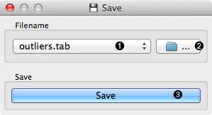
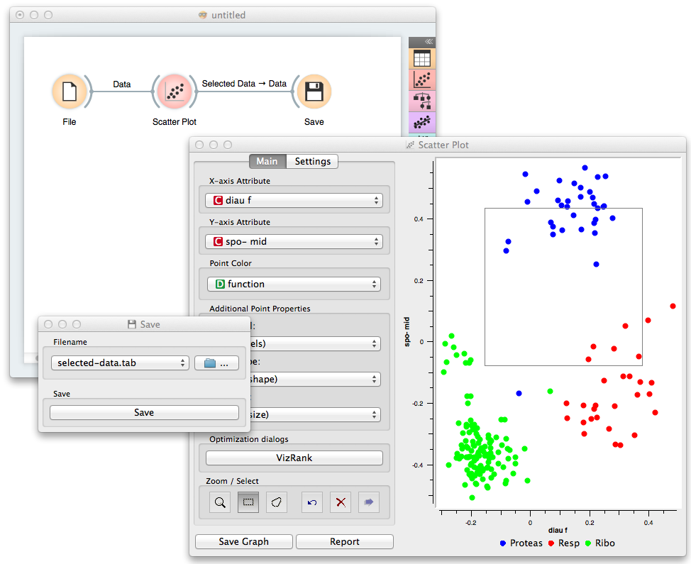

This is documentation for Orange 2.7. For the latest documentation, see Orange 3.
Save¶
Saves data to a file.
Signals¶
- Inputs:
- Data
Attribute-valued data set.
- Outputs:
- (None)
Description¶
Save widget considers a data set provided on the input channel and saves it to a data file with the specified name. The widget remembers a history of the most recent file names. It can save into tab-delimited and comma-separated files, as well as the C4.5’s format and Weka’s .arrf files.
By design, the widget does not save the data every time it receives a new signal on the input as this would constantly (and, mostly, inadvertently) overwrite the file. Instead, the data is saved only after a new file name is set or the user pushes Save button.
- Selected from the file names and locations from the past saves.
- Specify a new data file to save to.
- Save the data to a chosen data file.

Example¶
In the workflow below we load the data into a Scatter Plot widget, where we select a subset of the data instances and push them to Save widget to store them in a data file.
